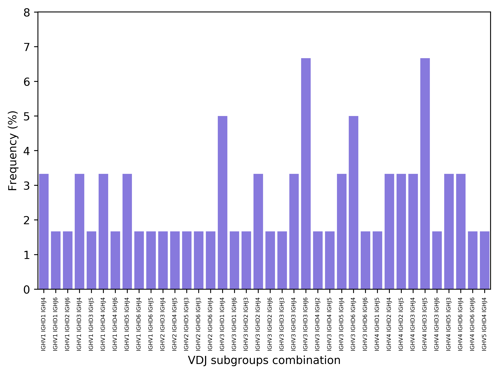

In addition to various textual outputs PASA provides several plots that summarizes different statistics of the data. For example:
(1) A histogram of the cdr3 IGH length
(2) A histogram of the IGH DJ counts
(3) A histogram of the IGH V counts
(4) A histogram of the IGH VDJ counts

(5) Isotypes distribution
(6) proteomics vs genetics